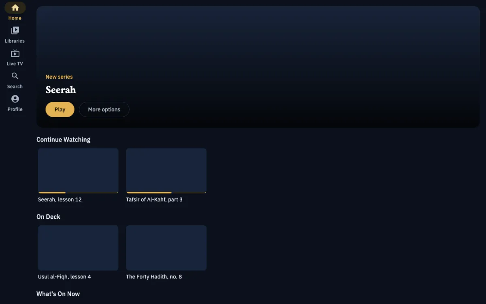
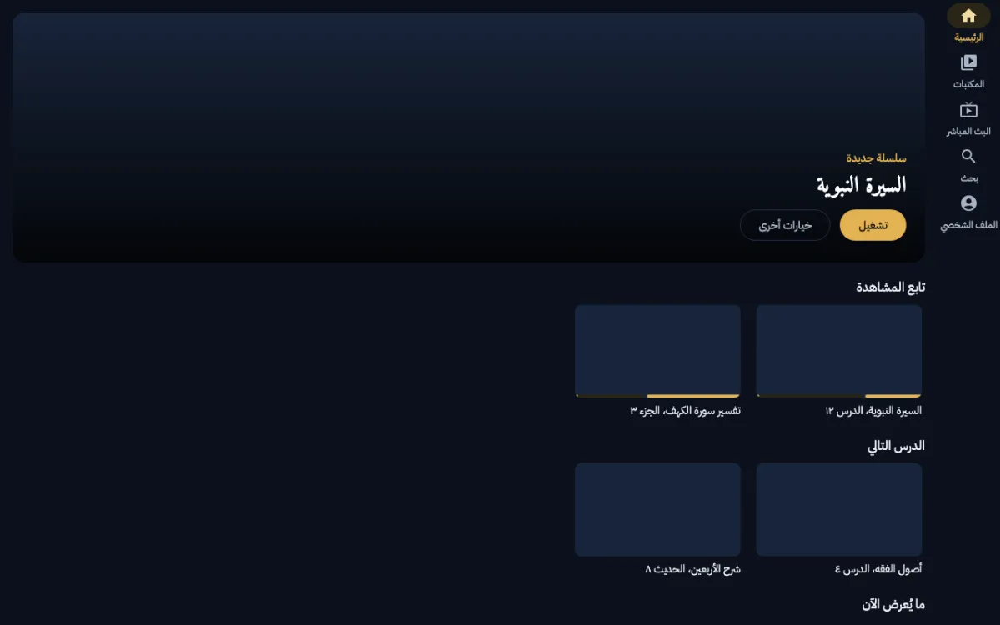
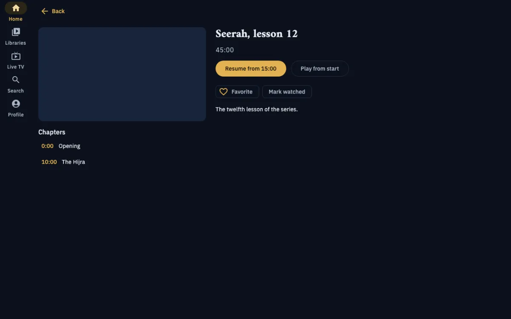

Compose for Desktop 1.12.2 (Material 3, a Swing host), apps/desktop-player. The images are its
off-screen Compose captures on the test home, as maktaba.dev shows them
(web/packages/devportal/static/assets/apps/desktop-player-*.webp): the window's content only. No
capture of the window frame, the menu bar, a dialog or the installer exists in the repository or in CI.

desktop-player-home-en.webp
desktop-player-home-ar.webp
desktop-player-video-en.webpTheme.kt), IBM Plex Sans Arabic and Amiri, brass actions.Strings.kt's Lang.Ar sets LayoutDirection.Rtl.Main.kt:126, Window(…)).MenuBar, a Swing JMenuBar in the default look and feel: Account, Big screen, Language, Help (Main.kt:137–165); no look and feel is set.AlertDialogs with default shapes and type (Dialogs.kt, StartScreens.kt, ProfilePages.kt, Diagnostics.kt)..msi with WiX's stock dialogs; only the icon is set (build.gradle.kts:111–135). Linux: .deb, .rpm, no UI.Theme.kt copies the Android values).runComposeUiTest tests check semantics only; _desktop-player.yml uploads test reports on failure, no images.